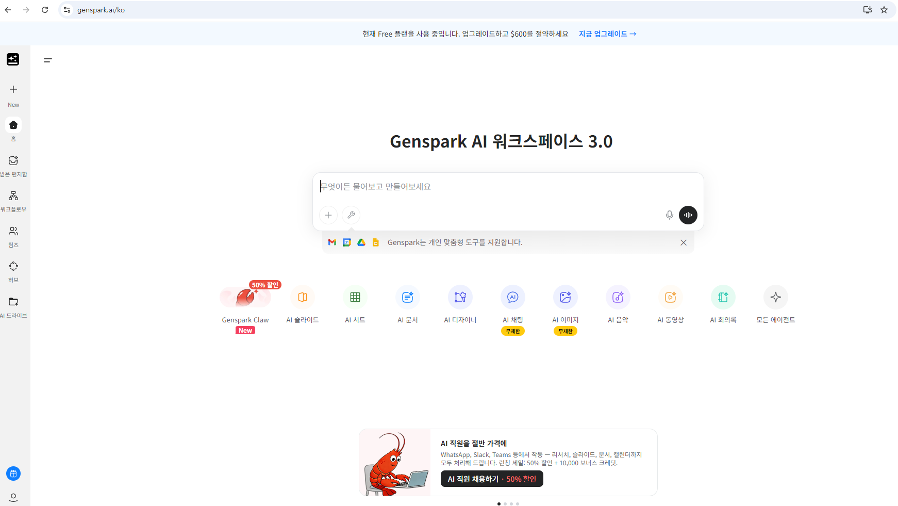

GenSpark(젠스파크)는 차세대 AI 기반 코딩 및 생산성 도구로, 개발자와 크리에이터가 더 빠르고 효율적으로 아이디어를 실현할 수 있도록 돕습니다. 단순한 코드 생성을 넘어, 프로젝트 전체의 구조를 설계하고 복잡한 로직을 최적화하는 데 특화되어 있습니다.
이 가이드에서는 젠스파크의 기초적인 설치 방법부터 실무에서 바로 적용할 수 있는 고급 활용 팁까지 상세하게 다룹니다. AI 도구를 처음 접하는 분들도 쉽게 따라할 수 있도록 단계별로 구성되었습니다.
사용자의 필요에 딱 맞는 맞춤형 AI 비서를 생성할 수 있습니다. 에이전트의 역할, 말투, 전문 분야를 세밀하게 설정하여 업무에 최적화된 지원을 받으세요. 특정 프로젝트나 워크플로우에 완벽히 적응하는 똑똑한 비서를 직접 만들어볼 수 있습니다.
키워드 몇 개만 입력하면 전문적인 프레젠테이션을 자동으로 제작해줍니다. 다양한 테마와 레이아웃 템플릿을 제공하여 시각적으로 완성도 높은 결과물을 만들어냅니다. 발표 자료 준비 시간을 획기적으로 줄여주는 혁신적인 기능입니다.
스마트한 스프레드시트 관리와 데이터 분석을 지원합니다. 복잡한 수식 입력 없이도 자연어로 데이터 요약이나 시각화, 차트 생성을 요청할 수 있습니다. 방대한 데이터를 체계적으로 정리하고 인사이트를 도출하는 데 최적의 도구입니다.
보고서, 기사, 블로그 포스트 등 다양한 형식의 문서를 자동으로 작성합니다. 통계 자료와 관련 그래픽을 함께 포함하여 설득력 있는 문서를 구성해줍니다. 주제만 던져주면 논리적인 구조와 풍부한 내용을 갖춘 초안을 즉시 제공합니다.
코드 생성부터 오류 진단까지 개발의 전 과정을 AI가 돕습니다. 여러 프로그래밍 언어를 지원하며, 복잡한 알고리즘 설계나 디버깅 작업을 실시간으로 수행합니다. 개발자가 더 중요한 아키텍처 설계에 집중할 수 있도록 반복적인 코딩 업무를 대신합니다.
로고, 배너, 소셜 미디어 그래픽 등을 자동으로 제작해주는 도구입니다. 세련된 디자인 템플릿을 활용하여 브랜드 이미지에 맞는 그래픽을 빠르게 도출할 수 있습니다. 전문 디자인 지식이 없어도 수준 높은 시각 자료를 직접 만들 수 있게 해줍니다.
긴 영상에서 핵심적인 장면을 추출하고 편집하는 지능형 비디오 도구입니다. 자동으로 자막을 제작하고 장면을 분할하여 짧은 숏폼 콘텐츠로 변환해줍니다. 영상 제작 및 편집 프로세스를 자동화하여 생산성을 극대화합니다.
무료로 제공되는 멀티모델 채팅 서비스로, 최고의 AI 모델들을 한곳에서 경험할 수 있습니다. GPT, Claude, Gemini 등 여러 모델을 동시에 사용하여 가장 정확한 답변을 도출하는 MOA 방식을 채택했습니다. 다양한 AI의 장점을 비교하며 최적의 답변을 얻으세요.
고성능 이미지 생성 및 편집 엔진인 Nano Banana를 탑재했습니다. 배경 제거, 이미지 확장, 가상 착용 등 복잡한 이미지 처리 작업을 클릭 몇 번으로 해결합니다. 상상하는 모든 이미지를 고화질로 구현하고 자유롭게 편집해보세요.
텍스트 대본만으로 완성도 높은 영상을 자동으로 제작해줍니다. 어울리는 배경음악과 시각 자료를 AI가 직접 선정하여 배치하며, 나레이션까지 포함할 수 있습니다. 유튜브나 마케팅용 영상을 제작할 때 소요되는 비용과 시간을 획기적으로 절감합니다.
실시간 음성 인식을 통해 회의 내용을 정확하게 텍스트로 기록합니다. 회의의 핵심 내용을 요약하고 향후 진행해야 할 액션 아이템을 자동으로 정리해줍니다. 중요한 결정 사항을 놓치지 않도록 도와주는 완벽한 비즈니스 파트너입니다.
작성된 텍스트를 자연스러운 목소리의 팟캐스트 콘텐츠로 변환합니다. 주제에 대한 리서치와 원고 작성을 자동으로 수행하여 방송 준비를 돕습니다. 오디오 콘텐츠 제작의 진입 장벽을 낮춰 누구나 자신만의 방송을 시작할 수 있게 합니다.
여러 AI 모델이 협동하여 특정 주제에 대해 심도 있는 리서치를 수행합니다. 파편화된 정보를 모아 체계적인 보고서 형태로 제공하며, 신뢰할 수 있는 출처를 함께 명시합니다. 전문적인 지식이 필요한 분야의 조사를 가장 빠르고 정확하게 처리합니다.
온라인상의 뉴스, 발언, 이미지의 진위 여부를 AI가 실시간으로 검증합니다. 허위 정보나 조작된 데이터를 식별하여 정보의 신뢰성을 판단할 수 있게 도와줍니다. 정보 홍수 속에서 정확한 사실만을 걸러낼 수 있는 필수적인 도구입니다.
전화를 대신 받고 응대하는 지능형 전화 어시스턴트 서비스입니다. 한국 로컬 라인을 지원하여 비즈니스 통화나 예약 관리를 원활하게 처리할 수 있습니다. 바쁜 업무 시간 중에도 중요한 전화를 놓치지 않고 관리해주는 편리한 기능입니다.
젠스파크 공식 홈페이지에 접속하여 계정을 생성합니다. 대시보드 접근 권한을 얻은 후, 사용 중인 OS(Windows, Mac, Linux)에 맞는 클라이언트를 다운로드하여 설치하세요. 초기 설정 마법사를 통해 기본 개발 환경을 세팅할 수 있습니다.

'New Project' 버튼을 클릭하여 새 작업 공간을 만듭니다. 채팅창에 만들고자 하는 앱이나 기능에 대해 자연어로 설명하세요. 예: "투두 리스트 앱을 만들어줘, 다크 모드 기능도 넣어줘." 구체적으로 적을수록 AI가 더 정확한 결과를 도출합니다.
젠스파크가 생성한 코드는 오른쪽 에디터 화면에 즉시 반영됩니다. 'Preview' 탭을 눌러 실제 작동 모습을 실시간으로 확인하고, 수정이 필요한 부분은 다시 AI에게 요청하여 다듬을 수 있습니다.
사용자 후기